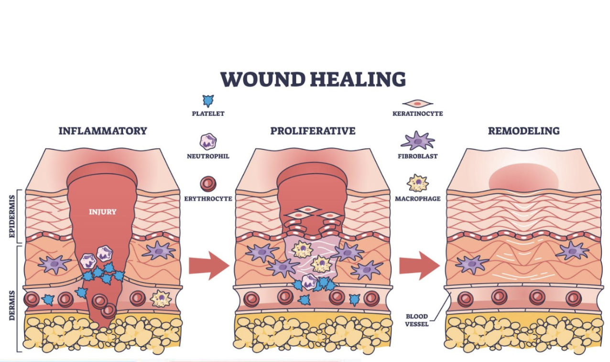
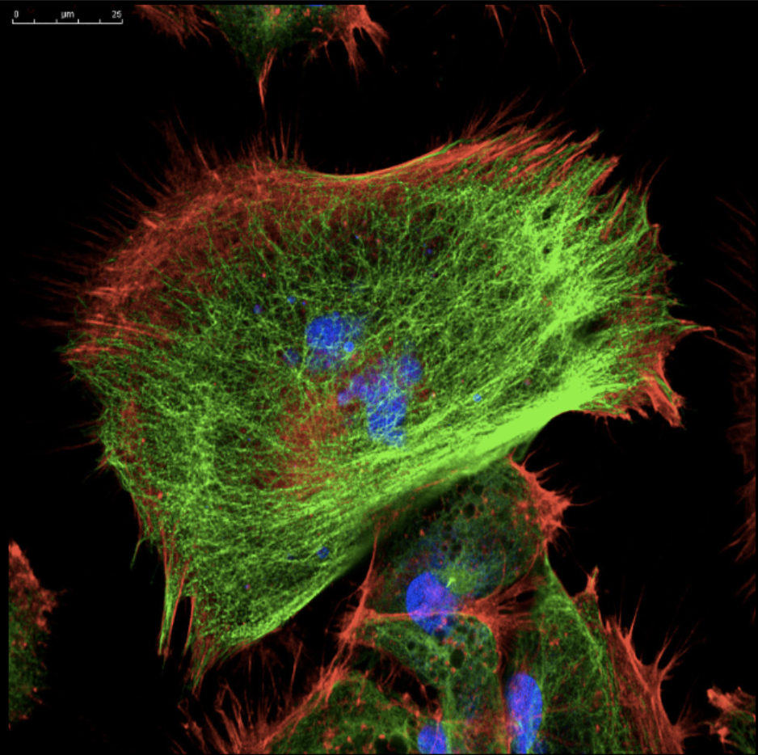
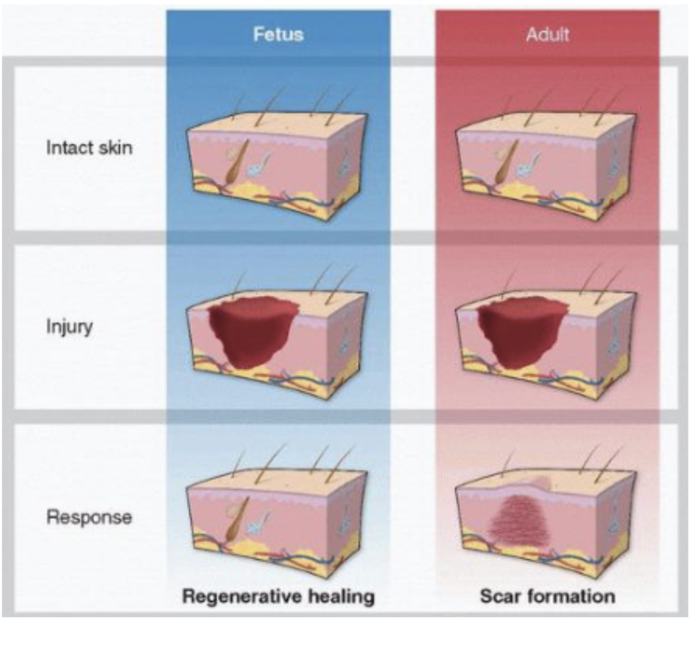

Biology • Regeneration
Why Do Wounds Sometimes Heal Without Scars? The Hidden Science of Regeneration
If you cut your skin, your body repairs itself almost automatically. Within days, the wound closes. Within weeks, it may fade into a thin, pale line, or sometimes disappear almost completely. But in other cases, a visible scar remains: thicker, less flexible, and different from the surrounding skin. This raises a fascinating question: why can the body sometimes heal perfectly, yet other times settle for a scar? The answer lies in how the body balances speed, survival, and precision during the healing process.
When the skin is damaged, the body responds immediately. Blood vessels constrict to reduce blood loss, and platelets form a clot, creating a temporary barrier. This is followed by inflammation, where immune cells such as neutrophils and macrophages arrive to clear bacteria and dead tissue. Although inflammation is essential for preventing infection, it also sets the stage for what kind of healing will occur.
After this initial response, the body enters the proliferation phase. Cells called fibroblasts begin producing collagen, a structural protein that acts like a scaffold for new tissue. At the same time, new blood vessels form in a process called angiogenesis, supplying oxygen and nutrients to the healing area. Finally, during the remodelling phase, the tissue is reorganised and strengthened over time.

In an ideal scenario, this process results in regeneration, which is the complete restoration of the original tissue, including structures like hair follicles, sweat glands, and normal skin architecture. However, in most adult humans, healing leads to repair rather than regeneration. This produces scar tissue, which is functionally adequate but structurally inferior.

One of the key differences between regeneration and scarring lies in collagen. In normal skin, collagen fibres are arranged in a basket-weave pattern, providing strength and flexibility. In scars, however, collagen is laid down quickly in thick, parallel bundles. This disorganised structure lacks the complexity of original tissue, which is why scars can feel stiff and look different from surrounding skin.
But why does the body choose this less perfect outcome?
The main reason is efficiency. From an evolutionary perspective, rapid wound closure is more important than perfect restoration. A quickly sealed wound reduces the risk of infection and blood loss, both of which could be life-threatening. Scarring is essentially a “quick fix” - a biological compromise that prioritises survival over perfection.
Interestingly, this is not always the case. In early human development, foetuses can heal wounds without forming scars. Their skin regenerates completely, restoring normal structure and function. This suggests that the ability to regenerate is not absent in humans, it is simply lost or reduced after birth.
So what changes?

One important factor is inflammation. Foetal wounds exhibit a much weaker inflammatory response compared to adult wounds. Lower levels of inflammation mean fewer signals that promote fibrosis (the process responsible for scar formation). In contrast, adult wounds often involve a stronger inflammatory response, which increases the likelihood of scarring.
Another difference involves signalling molecules called growth factors. These molecules control how cells behave during healing. A group known as transforming growth factor beta (TGF-β) is particularly important. In adults, TGF-β1 and TGF-β2 are associated with scar formation, as they stimulate fibroblasts to produce excess collagen. In foetal healing, however, higher levels of TGF-β3 are present, which appears to promote more organised, regenerative repair.
Fibroblasts themselves are also more complex than once thought. Rather than being a single type of cell, fibroblasts exist in different subtypes with distinct roles. Some drive scar formation, while others support regeneration. Research suggests that the balance between these subtypes influences whether a wound heals with or without a scar.
Oxygen levels may also play a role. Adult wounds are typically exposed to higher oxygen levels, which can increase oxidative stress (damage caused by reactive oxygen species). This can promote inflammation and fibrosis. In contrast, the foetal environment is relatively low in oxygen, which may help limit these effects and support regeneration.
Understanding these mechanisms is not just scientifically interesting, it also has major medical implications.
Scarring is often seen as a cosmetic issue, but it can also affect function. For example, scars on joints can restrict movement, while scars in internal organs can interfere with their normal function. After a heart attack, damaged heart muscle is replaced with scar tissue, which cannot contract. This reduces the heart’s ability to pump blood effectively and can lead to long-term complications such as heart failure.
If scientists could shift the healing process from scarring to regeneration, it could transform medicine. Instead of simply repairing damage, we could restore tissues to their original state.
Several approaches are currently being explored. One strategy involves targeting growth factors, such as increasing TGF-β3 while reducing TGF-β1 activity. Another involves stem cells, which have the ability to differentiate into different cell types and may help regenerate damaged tissue. Bioengineered materials, such as hydrogels, are also being developed to mimic the natural environment of healing tissue and guide cells towards regeneration.
However, this is not straightforward. The healing process is highly complex, involving many interacting pathways. Intervening in one part of the system can have unintended consequences. For example, reducing inflammation too much might increase the risk of infection, which could be more dangerous than scarring itself.
This highlights an important principle in medicine: treatments must balance benefits and risks carefully. The body’s systems are interconnected, and even well-intentioned interventions can disrupt that balance.
What makes this topic particularly relevant for medicine is that it challenges the common assumption that healing is always about restoring the body to its original state. In reality, healing often involves compromise. The body prioritises survival, even if it means sacrificing function or appearance.
For a future doctor, understanding this trade-off is essential. It encourages a deeper appreciation of how the body works, not just in ideal conditions, but under stress and injury. It also highlights the importance of research in improving outcomes, moving from basic repair towards true regeneration.
Ultimately, the question of why wounds sometimes heal without scars is not just about skin. It reflects a broader challenge in medicine: how to guide the body towards better healing. By understanding the underlying biology, we move closer to treatments that do not just close wounds, but truly restore what was lost.
In the future, scars may no longer be an inevitable part of injury, but a problem we have learned how to solve.